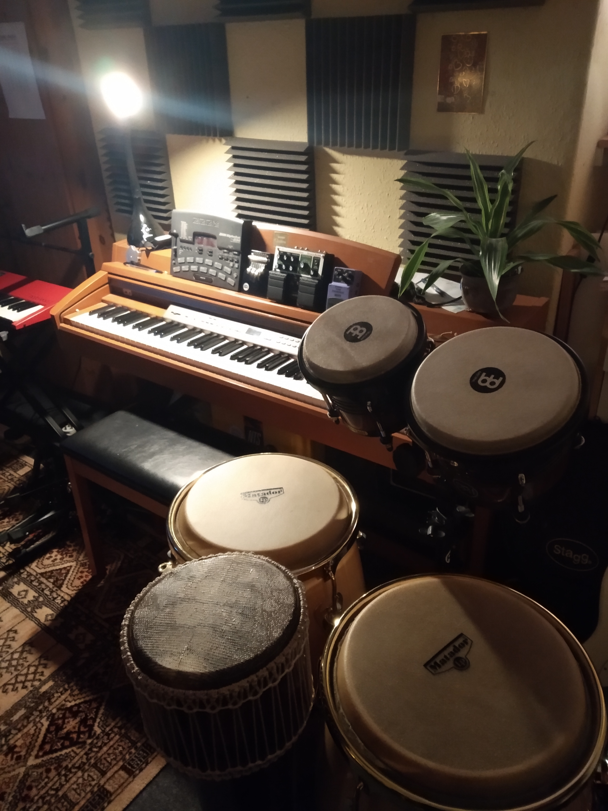

This is just an example of some of the things we do:
Remote Recording - strings (violin, viola, cello), solo lines or multi-tracked. Saxophone recording. Hand percussion layering.
We also have limited space to record vocals at the studio.
Arranging - possible from MIDI if you have the parts
Mixing and Mastering
Audio editing, noise cancellation and correction
Original music for trailers or short films
Beat programming and adding MIDI drums to tracks
Voiceover mixing and correction

We use a combination of analogue and digital equipment, including some of the
lastet technology in spectral processing and dynamics. These are just some of the things we use in the studio:
Cubase SX and Bitwig Studio for production, mixing and mastering
iZotope RX Advanced for noise correction, voiceover editing and spectral filtering
Matador Congas, Meinl Bongos and a variety of wooden hand percussion for drum layering
Audient AP800 analogue pre-amp with two channels of tube saturation for recording
Aston Origin and sE Electronics large diapthragm condensor microphones
AKG 470 and Oktava MK12 - stereo pair small diapthragm condensor microphones
DMG mastering plugins and various Softube plugins for final polishing of tracks